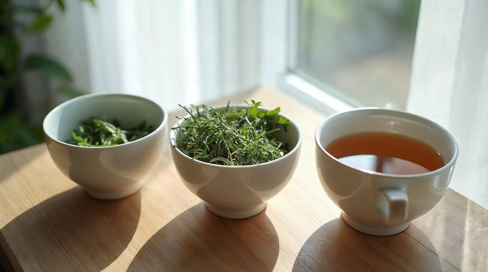
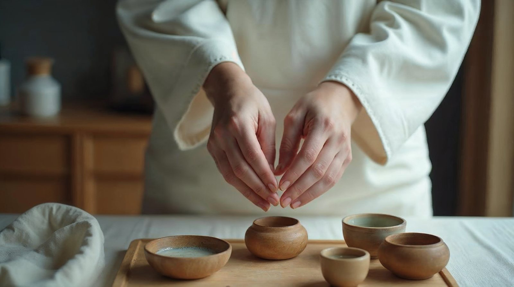
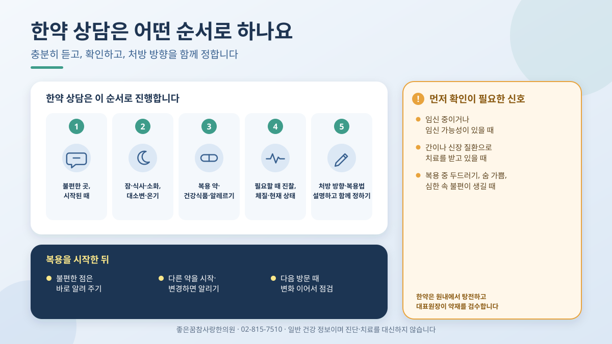

이종호 한의사 감수좋은꿈참사랑한의원 대표원장 (한의사 면허번호 19769)발행 2026-11-23 · 수정 2026-11-26
이 글의 차례
퇴근길 지하철에서 꾸벅 졸다 내릴 역을 놓칠 뻔한 날이면, 보약이라도 한 재 지어 먹어야 하나 싶어집니다. 한약 상담은 맥을 짚으며 이야기를 듣는 데서 시작해, 드시는 약과 몸 상태를 확인하고, 처방 방향을 설명드린 뒤 함께 정하는 순서로 진행됩니다.
진료실에서 "요즘 기운이 없어서 보약 좀 먹어야겠다"는 말씀을 자주 듣습니다. 그 말 속에는 그동안 버텨 준 몸에 뭐라도 해 주고 싶은 마음이 들어 있지요.
저는 그 마음이 참 고맙습니다. 그래서 약을 고르기 전에 더 차근차근 여쭙고 싶습니다. 오늘은 그 차근차근이 어떤 순서인지 적어 보겠습니다.
왜 이렇게 여러 단계를 거칠까요
같은 "피곤해요"라는 말 안에도 사정이 여럿입니다. 잠을 못 자서 지친 분, 소화가 안 되어 먹은 것이 힘이 되지 못하는 분, 마음에 걸린 일이 있어 몸이 따라 무거운 분, 오래 앓은 뒤 기운이 바닥난 분이 모두 같은 말로 시작하십니다.
피로의 이유는 잠 부족이나 과로, 영양뿐 아니라 빈혈이나 갑상선 같은 질환일 때도 있습니다. 그래서 무엇으로 채울지보다 왜 기운이 떨어졌는지부터 살핍니다. 이유를 놓친 채 약부터 드시면 기대와 달리 속이 불편하거나 잠이 흐트러지는 분도 있습니다.
차에 빗대어 말씀드리면 이렇습니다. "힘이 없어서 몸이 무거운 것과 살이 쪄서 무거운 것은 다릅니다. 차로 치면 연료가 부족한 상태인지부터 봅니다." 몸이 무겁다는 같은 말이라도 살피는 방향과 생활에서 권해 드리는 것이 달라진다는 뜻입니다.
같은 증상이라도 체질과 소화 상태, 잠의 모양에 따라 맞는 처방이 달라질 수 있습니다. 식후에 늘 더부룩하고 손발이 찬 분과, 속이 쓰리고 입이 마르며 잠이 얕은 분은 같은 소화불량이라도 살피는 방향이 다릅니다.
누구에게나 좋다는 방법이 어떤 분에게는 맞지 않을 때가 있습니다. 잡곡이 좋다는 말만 듣고 드시다가 속이 불편해지는 분도 계시듯, 옆 사람에게 잘 맞았다는 약이 내게도 맞으리라는 법은 없습니다.
맥도 그렇습니다. 진맥을 설명할 때 저는 "사람마다 맥에 좋고 나쁨이 있는 게 아닙니다. 얼굴 생김새처럼 다 다를 뿐입니다."라고 말씀드립니다. 처방도 그분의 맥과 몸에 맞춰 정합니다.
드시는 양약과 건강기능식품을 미리 알아야 겹치는 부분 없이 처방을 정할 수 있습니다. 임신 가능성이 있거나 수유 중인지, 간이나 콩팥 질환으로 치료를 받고 있는지도 처방 전에 먼저 확인합니다. 약재마다 따로 살펴야 하기 때문입니다.
임신 중이거나 수유 중이라면 드실지부터 진찰 뒤 함께 상의하고, 약재 하나하나를 따로 살펴 신중하게 정합니다. 한약이 맞지 않다고 판단되면 다른 방법을 먼저 함께 찾습니다.
맥으로 처방의 방향과 세기를 맞추는 것도 같은 이유입니다. 저는 이렇게 봅니다. "진맥까지 보고 맞춰 드리면, 억지로 참고 드실 일이 줄어듭니다." 맥을 짚어 보고 지금은 약보다 잠과 식사부터 정리해 보자고 말씀드릴 때도 있습니다.
먼저 이렇게 여쭙니다
처음 상담하는 날에는 대개 이런 질문부터 드립니다.
- 무엇이 가장 불편하고, 언제부터 그러셨나요?
- 잠과 식사, 대소변은 어떠신가요?
- 지금 드시는 약과 건강기능식품은 무엇인가요?
- 임신 가능성이 있거나 수유 중이신가요?
- 예전에 한약을 먹고 불편했던 적이 있나요?
낯선 질문이 섞여 있어도 편하게 답해 주시면 됩니다. 저는 잘 먹고, 잘 싸고, 잘 자고, 마음 편하고, 몸 따뜻하게, 이 다섯 가지를 몸이 회복하는 바탕으로 봅니다. 땀은 어떤지, 손발이 찬지, 얼굴로 열이 오르는지까지 여쭙는 까닭입니다.
몸의 온기, 소화, 잠, 대소변은 검사 수치로 다 드러나지 않을 때가 많습니다. 그래도 처방을 정하고 드시는 동안의 경과를 보는 데 좋은 단서가 됩니다.

상담 순서
- 양손을 내어 주시면 맥부터 짚으며 불편한 곳을 여쭙습니다.
- 잠·식사·소화·대소변·몸의 온기를 함께 여쭙습니다.
- 필요하면 혀와 배를 살피고, 받아 두신 검사 결과를 함께 봅니다.
- 드시는 약과 건강기능식품, 알레르기를 확인합니다.
- 처방 방향과 복용 방법을 설명하고 함께 정합니다.
한약을 상담하러 오셨든 침을 맞으러 오셨든, 저는 모든 분의 맥을 짚습니다. 다만 걸어오신 직후나 식사 직후에는 맥이 달라지기 때문에, 잠시 숨을 고르신 뒤에 짚습니다. 손목을 조이는 시계나 팔찌는 잠시 풀어 두시면 편합니다.
맥을 짚는 동안에도 말씀은 계속 듣습니다. 맥을 짚고 떠올린 생각에는 환자분의 대답에 따라 고쳐야 할 여지가 있기 때문입니다.
그분이 "그건 아닌데요"라고 하시면 저는 거기서부터 다시 듣습니다. 내 몸에서 언제 무슨 일이 일어나는지 가장 오래 지켜본 분은 제 앞에 앉은 그분이니까요.
혀를 보고 배를 눌러 보는 것은 필요하다고 판단될 때 더합니다. 건강검진 결과지나 다른 병원 검사 결과가 있으면 함께 보고, 필요하다고 판단되면 원내 혈액 검사기로 볼 수 있는 항목을 확인하기도 합니다.
예전에 드셨던 한약이 있어도 지금 상태를 기준으로 다시 살핍니다. 같은 분이라도 계절이나 생활이 바뀌면 몸 상태가 달라질 수 있기 때문입니다. 그때 받은 봉투나 처방 메모는 좋은 참고가 되니 가져와 주세요.
상담 끝에는 무엇이 가장 먼저 편해지기를 바라시는지 여쭙습니다. 바라는 것을 알아야 순서를 정할 수 있고, 한약으로 함께 해 볼 수 있는 것과 다른 진료가 먼저인 것도 솔직하게 말씀드릴 수 있습니다.
처방 방향이 정해지면 왜 이 방향인지, 어떻게 드시면 되는지 먼저 설명드립니다. 설명이 어려우면 이해되실 때까지 다시 여쭤 주세요. 보약을 생각하고 오셨는데 그날 감기 기운이 있거나 속이 많이 불편하면, 그것부터 살피고 다음에 다시 이야기하자고 할 때도 있습니다.
약재는 이렇게 고르고 달입니다
한약은 원내에서 달이고, 약재는 대표원장인 제가 살핍니다. 대단한 비법이 있어서가 아닙니다. 드시는 분이 물으시면 무엇이 어떻게 들어갔는지 바로 말씀드릴 수 있어야 한다고 생각하기 때문입니다.
약재는 국산도 쓰고 외국에서도 들어옵니다. 계피처럼 국내에서 나지 않아 베트남 같은 산지의 것을 쓰는 약재가 있고, 감초처럼 모래땅의 건조한 곳에서 잘 자라 내몽골 쪽 산지를 좋게 보는 약재도 있습니다. 같은 이름의 약재라도 등급이 여러 가지입니다.
제 생각은 단순합니다. 남의 입에 들어가는 것이니 품질을 먼저 봐야 합니다. 내 몸에 들어갈 약이니 무엇으로 지었는지 알고 드실 권리도 있다고 생각합니다.
어디서 지으시든 무엇으로 지었는지, 진찰을 하고 처방하는지, 드시다가 불편하면 어디로 연락하면 되는지는 편하게 물어보셔도 됩니다. 저는 이런 질문을 반갑게 생각하고, 아는 대로 말씀드리겠습니다.
달이는 과정이 궁금하시면 원내 탕전은 무엇이고 한약은 어떤 과정으로 만들어지나요?에 따로 정리해 두었습니다.

복용을 시작한 뒤
약을 지어 드리는 것으로 제 일이 끝나지 않습니다. 약을 드신 분께는 챙겨 드실 만했는지, 드신 뒤 속은 어땠는지부터 들어야 합니다. 제가 좋겠다고 생각해서 드린 약이 그분의 하루에서는 어땠는지, 그 대답은 다음에 만나야 들을 수 있습니다.
저는 한약 치료를 이렇게 설명드립니다. "맥을 읽어 드리고, 약을 드신 뒤 반응을 보고, 다시 맥을 짚습니다. 그렇게 함께 걸어가는 치료입니다." 처음부터 길게 정해 두기보다, 드시는 동안의 반응을 보며 이어 갈지 바꿀지 멈출지를 함께 정합니다.
드시는 중에 속이 불편하거나, 대변이 달라지거나, 잠이 흐트러지거나, 피부가 가렵다면 다음 진료를 기다리지 마시고 복용을 멈춘 뒤 연락해 주세요. 상태를 듣고 양이나 시간, 처방을 다시 살핍니다.
어떤 변화를 적어 두고 어떻게 알리면 좋을지는 한약을 먹다가 속이 불편하거나 피부에 이상이 생기면 어떻게 알려야 하나요?에 정리해 두었습니다.
다른 약을 새로 시작하거나 바꾸셨다면 그것도 알려 주세요. 드시던 양약은 한약을 시작했다고 임의로 끊지 마시고, 줄이거나 바꾸는 일은 처방한 의사와 상의해서 정합니다.
바쁜 하루에 복용 시간을 자주 놓친다면 생활에 맞는 시간을 다시 정하면 됩니다. 한 번 빠뜨렸다고 다음에 몰아 드시기보다 다음 시간부터 이어 드시면 됩니다. 보관은 받으실 때 들은 방법대로 하시고, 색이나 냄새가 이상하면 드시지 말고 연락 주세요.
드시는 동안 피할 음식은 처방에 따라 달라 약을 받으실 때 따로 안내해 드립니다. 술과 너무 기름진 음식은 대개 줄이시길 권합니다.
가족이 비슷한 증상이라고 같은 약을 나눠 드시는 것은 권하지 않습니다. 처방은 한 사람의 상태에 맞춘 것이니까요.
생활에서 바꿔 보자고 말씀드린 것이 있다면, 다음에는 해 보니 어땠는지, 무엇이 어려웠는지부터 여쭙고 싶습니다. 지키기 어려웠던 사정까지 듣고 나야 다음 이야기를 함께 정할 수 있습니다.
여러 원장이 함께 진료하는 날에도 기록을 함께 보고 이어서 진료하며, 일정 기간마다 대표원장이 다시 맥을 확인합니다.
스스로 점검해 보세요
한약 상담 전에 아래를 한 번 짚어 보세요. 해당하는 것이 있으면 상담 때 먼저 말씀해 주시면 됩니다.
- 먹는 약이나 영양제가 있는데 이름이 잘 기억나지 않는다
- 식사 뒤 속이 더부룩하거나 쓰린 날이 잦다
- 잠들기 어렵거나 자다가 자주 깬다
- 손발이 차거나, 반대로 얼굴로 열이 자주 오른다
- 대변이 묽거나 굳는 날이 잦다
- 아침에 일어나도 개운하지 않은 날이 많다
- 임신 가능성이 있거나 수유 중이다
해당하는 항목이 많다고 걱정하실 일은 아닙니다. 처방을 정할 때 어디부터 살필지 알려 주는 단서들입니다.
예를 들면 이런 경우입니다
예를 들어 야근이 잦은 직장인이 기운이 없다며 보약을 찾는 경우가 있습니다. 이럴 때는 몇 시에 잠들고 몇 번 깨는지, 끼니를 거르지는 않는지부터 여쭙고, 약과 함께 생활에서 먼저 바꿀 것을 정합니다.
예를 들어 혈압약을 드시는 어르신이 한약을 함께 드셔도 될지 걱정하시는 경우가 있습니다. 약 봉투를 가져오시면 이름과 드시는 시간을 함께 보고, 보통 시간 간격을 두고 드시도록 안내합니다. 혈압약은 그대로 드시면서 상의합니다.
예를 들어 예전에 한약을 먹고 설사를 했던 분이라면, 그때의 경험을 먼저 자세히 여쭙습니다. 소화가 약한 분은 소화부터 살피는 방향으로 시작하는 경우가 있습니다.
일상에서 먼저 해 볼 수 있는 것
상담 날까지 아래 몇 가지만 해 두셔도 이야기가 한결 빨라집니다.
- 드시는 약과 영양제를 사진으로 찍어 두기
- 일주일쯤 식사·잠·대변을 짧게 적어 보기
- 늦은 저녁의 카페인과 술 줄여 보기
- 한약을 먹기 편한 시간대를 미리 생각해 두기
영양제나 건강식품은 이름이 길고 비슷해서 기억만으로 말씀하시기 어렵습니다. 통째로 사진을 찍어 오셔도 충분합니다. 무엇을 어떻게 알리면 좋을지는 먹고 있는 영양제와 건강식품은 한의원에 어떻게 알리면 되나요?를 참고해 보세요.
보약은 계절마다 챙겨 먹어야 하느냐는 질문도 받습니다. 정해진 때가 있는 것은 아니고, 지금 몸 상태와 필요를 보고 정합니다.
한의원에서 함께 살필 수 있는 경우
- 소화가 약해 한약이 부담스러운 경우
- 양약을 먹고 있어 겹칠까 걱정되는 경우
- 잠이 얕아 약을 찾는 경우
- 예전에 한약을 먹고 속이 불편했던 경우
좋은꿈참사랑한의원에서는 모든 분께 맥부터 짚으며 불편한 곳과 잠·소화·대소변을 여쭙고, 필요하면 혀와 배를 살핀 뒤 진단과 상담을 거쳐 한약을 처방합니다. 원내에서 달이며 대표원장이 약재를 검수하고, 복용을 시작한 뒤에는 다음 방문 때 맥을 다시 짚으며 몸의 변화를 이어서 여쭙습니다.
이렇게 기록해 오시면 상담이 쉬워집니다
- 복용 중인 약과 건강기능식품 이름
- 평소 소화와 대변 상태, 몸이 찬지 더운지
- 잠드는 시각과 깨는 횟수
- 예전에 한약을 먹고 불편했던 적이 있는지
- 최근 건강검진 결과지
몸이 무거운데 이유를 모르면 무엇부터 해야 할지 막막하기만 합니다. 그동안 애써 버텨 온 몸의 이야기를 천천히 듣는 것부터 함께하겠습니다.
다음에 오시면 요즘 잠은 어떠신지, 식사 뒤 속은 편하신지부터 여쭙겠습니다.
이런 증상은 먼저 확인이 필요합니다
- 한약을 먹은 뒤 숨이 차거나 입술·얼굴이 붓는 경우
- 피부나 눈이 노래지거나 심한 복통·설사가 이어지는 경우
이런 신호가 있으면 한의원보다 가까운 병원이나 응급실을 먼저 찾으세요.

여쭙는 것
- 무엇이 가장 불편하고, 언제부터 그러셨나요?
- 잠과 식사, 대소변은 어떠신가요?
- 지금 드시는 약과 건강기능식품은 무엇인가요?
생활에서 해 볼 것
- 드시는 약과 영양제를 사진으로 찍어 두기
- 일주일쯤 식사·잠·대변을 짧게 적어 보기
- 늦은 저녁의 카페인과 술 줄여 보기
한의원에서 함께 살필 것
- 소화가 약해 한약이 부담스러운 경우
- 양약을 먹고 있어 겹칠까 걱정되는 경우
- 잠이 얕아 약을 찾는 경우
먼저 확인이 필요한 신호
- 한약을 먹은 뒤 숨이 차거나 입술·얼굴이 붓는 경우
- 피부나 눈이 노래지거나 심한 복통·설사가 이어지는 경우
한눈에 보는 표
| 구분 | 핵심 |
|---|---|
| 여쭙는 것 | 무엇이 가장 불편하고, 언제부터 그러셨나요? 잠과 식사, 대소변은 어떠신가요? |
| 생활에서 해 볼 것 | 드시는 약과 영양제를 사진으로 찍어 두기 일주일쯤 식사·잠·대변을 짧게 적어 보기 |
| 한의원에서 함께 살필 것 | 소화가 약해 한약이 부담스러운 경우 양약을 먹고 있어 겹칠까 걱정되는 경우 |
| 먼저 확인이 필요한 신호 | 한약을 먹은 뒤 숨이 차거나 입술·얼굴이 붓는 경우 피부나 눈이 노래지거나 심한 복통·설사가 이어지는 경우 |
자주 묻는 질문
한약은 상담 당일에 정하나요?
상태를 충분히 듣고 설명드린 뒤 함께 정합니다. 서두르지 않으셔도 되고, 그날 몸 상태에 따라 다음에 다시 이야기하자고 할 때도 있습니다.
양약과 함께 먹어도 되나요?
많은 경우 함께 드실 수 있지만, 드시는 약을 모두 알려 주셔야 확인할 수 있습니다. 약 이름이나 봉투 사진을 가져와 주시고, 양약은 처방한 의사와 상의 없이 끊지 마세요.
비용과 복용 기간은 상담 때 알 수 있나요?
처방이 정해지면 짓기 전에 안내해 드립니다. 복용 기간은 드시는 동안의 몸 반응을 보며 함께 정하고, 미리 궁금하시면 방문 전 전화(02-815-7510)로 확인해 주세요.
한약을 먹으면 간이 나빠지지 않을까 걱정돼요.
간 질환이 있거나 걱정되시면 상담 때 먼저 말씀해 주세요. 처방할 때 간·신장 상태를 함께 살피고, 드시는 중 불편한 점이 생기면 복용을 멈추고 연락해 주시면 됩니다.
좋은꿈참사랑한의원은 재진 때 지난번 이야기부터 이어서 여쭙니다. 진료시간과 예약은 오시는 길에서 확인하세요.
어디서 상담받을 수 있나요?
좋은꿈참사랑한의원은 서울 동작구 만양로2길 2 신성빌딩 3층·5층(서울 동작구 상도동, 7호선 상도역 3번 출구 근처)에 있습니다. 한의사 3명(이종호 대표원장, 조영기 수석진료원장, 정원영 진료원장)이 진료합니다. 진료시간은 평일 09:30~20:00(점심 13:00~14:00), 토·일·공휴일 09:30~15:00이며, 방문 전 전화로 확인을 권합니다. 예약은 네이버 예약, 카카오톡 상담, 전화 02-815-7510로 받습니다.
이 글은 일반적인 건강 정보이며 개인의 진단이나 치료를 대신하지 않습니다. 증상이 있거나 복용 중인 약이 있다면 진료를 통해 확인하세요. 치료 효과는 개인마다 다를 수 있습니다.
작성 기준: 일반적으로 알려져 있는 건강 정보를 참고해 정리했습니다(대표원장 감수). 증상 기록은 1~2주 동안 하루 1회, 비슷한 시간에 적어 오시면 지난 상태와 비교하기 쉽습니다.